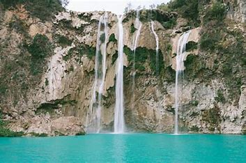
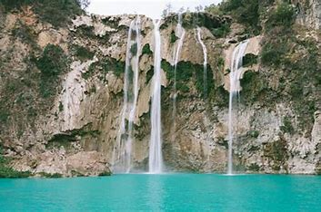
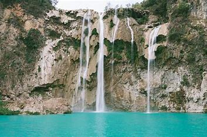

Esta cascada está localizada dentro de la Reserva de la Biósfera Sierra del Abra Tanchipa, la cual es una de las más grandes del mundo, además, esta gran cascada cuenta con formaciones petrificadas de roca, esto se debe a los minerales que formaron pequeñas albercas naturales o pozas, en donde podrás nadar tranquilamente.
